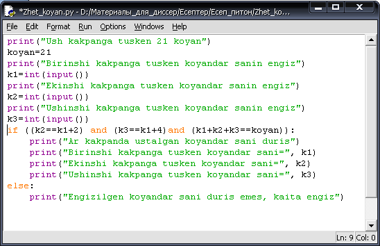
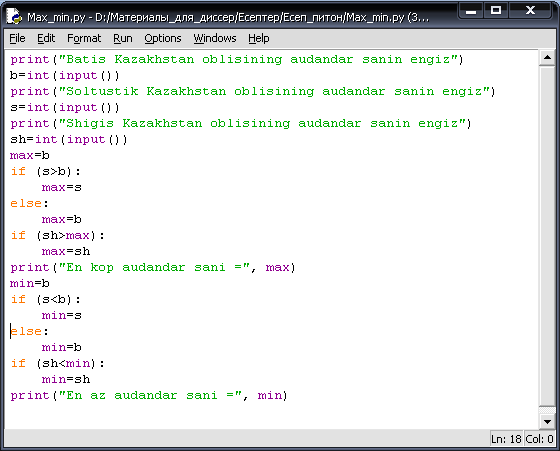
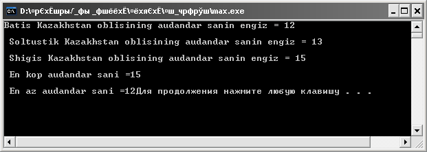

Кіріктірілген шарттарды программалау. Құрамды шарттарды программалау.
Бір аңшы
қартайған шағында қақпанын баласына тапсырады.
— Мына үш қақпан мені қырық жыл асырады,— дейді ол ұлына.
—Бұл үшеуі сенің
балаңның баласын да аш қылмайды.
— Жарайды, көке,— деп бала үш қақпанды, сонша темір қазықты,
әрқайсысы бір құлаш келетін шынжырды қабылдап алады. Бала тұтасқан қалың
шеңгелдің ішіне қақпандарын құрып, бетін шөп-шаламмен жауып қайтып келеді.
Келесі күні таңертең үш қақпанның біреуіне ғана қоян түседі.
Оны алады да, қақпандарды қайта құрып кетеді. Ертеңіне
кақпандарына келіп, тағы бір қоян алып қайтады.
— Екі күнде әкелгенің екі қоян, жерден жеті қоян тапқандай
қуанасың, балам...,— дейді әке бала тіршілігіне көңілі толмай.
— Қалайша, көке, бір қақпанға екі қоян түссе де жеті қоян
болмайды ғой,— дейді бала әке сөзіне танданып.
Әке сол күнгі түнде қақпанды өзі құрып, жиырма бір қоян ұстап
әкеледі. Бала қоян санын үш қақпанға бөліп, «әрқайсысына жеті қояннан
түскеніне» қайран қалады.
— Олай емес... Екінші қақпанға — бірінші қақпаннан екі қоян
көп, ал үшіншісіне қарағанда екі қоян кем түсті,— дейді әкесі.
«Қай қақпанға қанша қояннан түсті екен?»— деп бала ойланып
қалыпты.
Нұсқаулық.
Ең аз түскені — бірінші қақпан. Бірінші қақпанға қарағанда,
екінші қақпанға екі қоян, ал үшіншіге төрт қоян артық түскен. Егер үш қақпанға
түскен жиырма бір қояннан алты қоянды шығарып тастасақ, қалған он бес қоян әр
қақпанға тең бөлінеді. (Жауабы: Түні бойы
қақпандарды бірнеше рет құрғанда бірінші қақпанға — бес қоян, екіншіге — жеті
қоян, үшіншіге тоғыз қоян түскен)
Берілген
есептің Python программалау тілінде программалау коды 1,2-суреттерде
көрсетілген.
|

Сурет 1- Жиырма
бір қоянды есептеу
Сурет 2- Алынған
нәтиже
Осы есептің С++
программалау тілінде программа коды 3,4-суреттерде
берілген.
|
Сурет 3 - С++
программалау тілінде Жиырма бір қоянды есептеу
Сурет 4 - Алынған
нәтиже
Батыс
Қазақстан облысының аудандар санын, Солтүстүк Қазақстан облысының аудандар санын және Шығыс Қазақстан облысының
аудандар санын енгізейік. Осы үш облыстың аудандарының санының ең көбін және ең
азын шығаратын программа құрайық.
Берілген
есептің Python программалау тілінде программалау коды 5,
6-суреттерде көрсетілген.
|

Сурет 5 - Ең көп және
ең аз аудандардың санын табу
Сурет 6 - Алынған
нәтиже
Осы есептің С++ программалау тілінде программа коды 7, 8-суреттерде берілген.
|
Сурет 7 - С++ программалау
тілінде ең көп және ең аз аудандардың санын табу

Сурет 8 - Алынған нәтиже